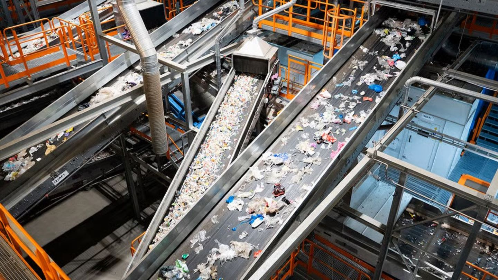

ЭкоЛайн-ВторПласт
📍 Егорьевск, Московская область
Крупнейший переработчик пластиковых ТКО в России. Перерабатывает ПЭТ-бутылки, ПНД-флаконы, полипропилен и плёнки.
ЭкоЛайн-ВторПласт
- Мощность: 47 тыс. тонн гранул в год
- Производство флекса (пищевой PET) и гранул
- Автоматизированная сортировка оптикой и нейросетями
- Многоступенчатая мойка и экструзия
- Замкнутая система водоочистки без выброса микропластика
- Выпуск: контейнеры, поддоны, бытовые изделия (до 120 тыс. шт./год)